Your First Scenario - attack an airport - Problem model creation¶
Now we go to create a RobotML project and model our problem.
Create a RobotML project¶
Register our SVN reository¶
With the Window menu, open the SVN repository exploring perspective. Press Add a new SVN location button 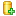 in the Project explorer view.
Enter the url SVN repository given by the RobotML portal site in the Add SVN repository window.
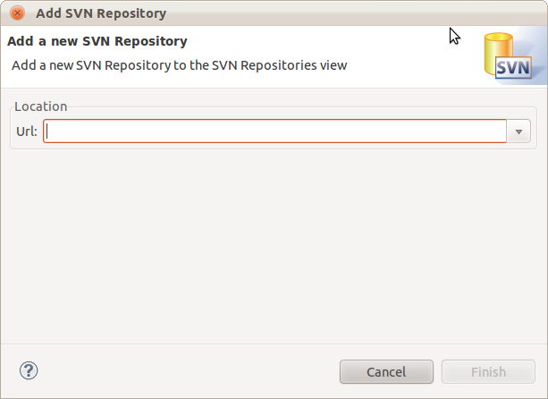Enter the RobotML portal authentification.
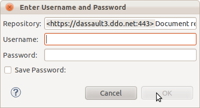Note
Can save the authentification informations for next time.
Next clic on finish. The new SNV repository will be added in the Project explorer view.
Checking out our SVN repository and create the RobotML project¶

In the SVN repository exploring perspective, go in the SVN repositories view. Select the new location added and open it. Select the trunk node, and do right clic to select the Checkout command. Select Check out as a project configured using new Project Wizard.
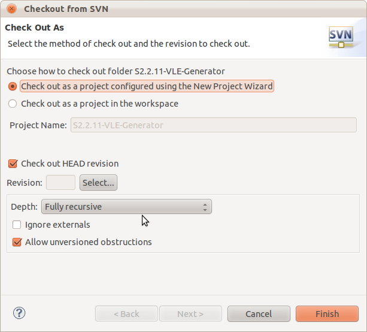Important
Should checking out the HEAD revision.
At next, select the RobotML project in the Papyrus category.
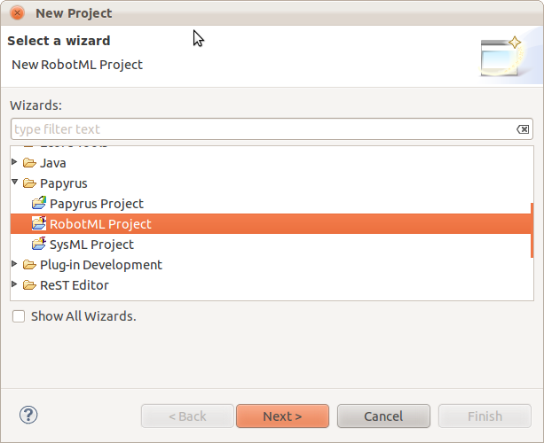Name your RobotML project as “ATK_Scenario”, and clic Finish.
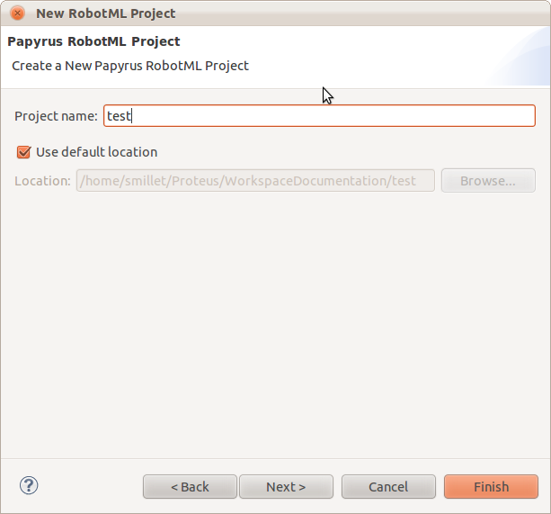With the Window menu, select the Java perspective. We should to view the new ATK_Scenario project in the Project explorer view. This projct contains the new RobotML project created.

Modeling our problem¶
Now we have to checkout our SVN repository. We go to model our problem, but now we have a problem:
| what: | How to deasign our scenario? |
|---|---|
| how: | We should to separate on any part. |
We go to deasign our model on 4 parts:
| Project level | Model name | Model description |
|---|---|---|
| 0 | ATK_N0 | Contain required model object (datatype, external library). |
| 1 | ATK_N1 | Contain the basic model object |
| 2 | ATK_N2 | Contain the system object model. |
| 3 | ATK_N3 | Contain the robot object model |
| 4 | ATK_N4 | Contain the scenary oject model. |
| what: | Why do this? |
|---|---|
| how: | Because if we want, we could shared the model element with other model, and it’s easiest to debug a small model. |
Model creation¶
In first time we have created the model level 0. Now we go to create the other levels.
Adding a new model in the project¶
In the Project explorer view, select the project node and do right clic to select the New/Other... submenu. Choose RobotML Model in the Papyrus category.
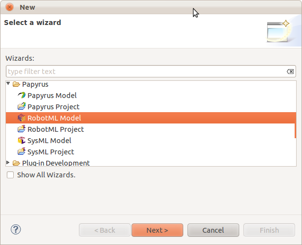Next name the new model as ATK_N1, and clic on finish.
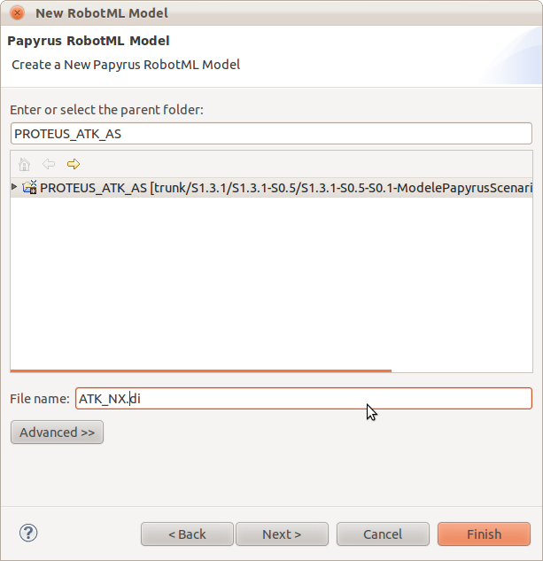The new model is added to the workspace.
Note
We should repeat this operation to create the other model (ATK_N2, ATK_N3 and ATK_N4).
Adding required object in the model¶
In the Project explorer view, open the ATK_N0 RobotML model, and with the menu Window/Open perspective... open the Model explorer view. Select the root node model and rename it as RequiredObjectModel. Select root model node and do rigth clic. In the context menu, select Add Child/new package. Name it DataTypes.
Note
To deasign the model, it’s more easy to work with diagram. Don’t create element with menu if this is possible (except package and enumeration values).
Create model’s DataType¶
Selet the DataTypes node and do right clic. In the context menu, Add diagram/new DataType diagram. name it DataType_diagram.
Now all action to add datatypes elements should to be done in this diagram. For this we should to use the RobotML tool panel, locate on the right side of the diagram.
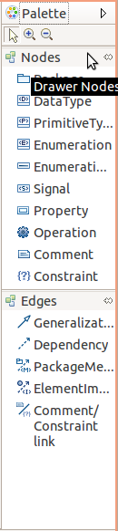Create basic datatype¶
Select the DataType component in the RobotML tool panel and drag it on the diagram. Go it the Properties view, and rename the new datatype as Long. Add default value as 0 with a Literal Integer.
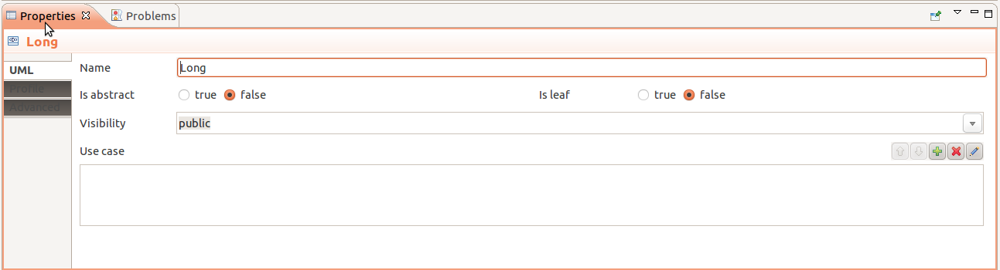Add the following basic datatype:
- Logical
- Pointer
- Real
- Int
Create enumeration¶
In the RobotML tool panel, select the Enumeration component and drag it on the diagram. Go on the Property view and name the new enumeration EntityType. In th RobotML tool panel, select the Enumeration literal and drag it in the created enumeration. Select it and name it ABSTRACT_ENTITY.
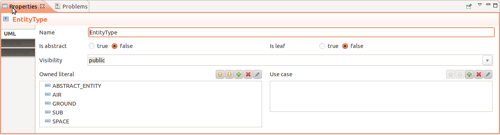In the Model explorer view, select the EntityType node and expand it. Select the ABSTRACT_ENTITY node and do right clic. Select Add child / new LiteralValue in the context menu. Name the lietral as ABSTRACT_ENTITY_VALUE and put his value at 0.
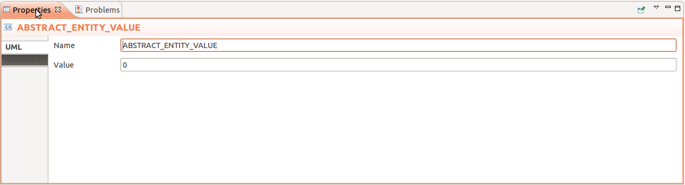Repeat the operation to complete the EntityType enumeration as AIR(0), GROUND(2), SEA(3), SUB(4), SPACE(5).
Create the enumeration referenced in the Annex.
Create composed datatype¶
In the RobotML tool panel, select the DatatType component and drag it on the diagram. Go it the Properties view, and rename the new datatype as SensorTechno. In the RobotML tool panel, selcet the Attribute component and drag it in the new datatype created. Select the new attribute and edit their properties in the Property view. Name it as id, and select Long for the type value. Add a another attribute to the datatype. his name is range and is type is Real.
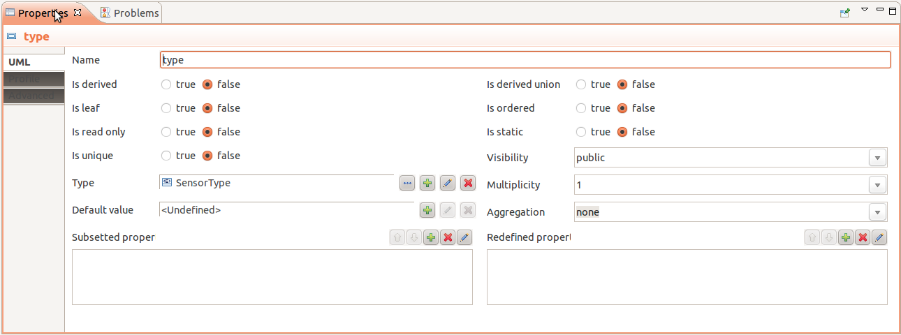Create the composed datatypes referenced in the Annex.
Create our external librairy¶
In the Model explorer view, select the root model node. Do right clic and select Add child / new package... to add the Librairies package. Select the Librairies package and do right clic and add a new component diagram selection Add diagram / new RobotML component diagram... in the context menu. Name the diagram as ExternalLibrairies_ComponentDiagram. In the new Diagram select Component element in the RobotML tool panel and drag it on the diagram. Name the component as libExternalFunction. In the Property view, select Profil and assign the AlgorithmLibrary profil.
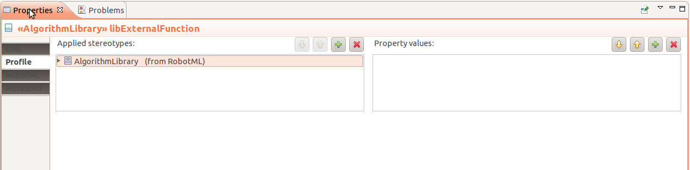Create our external librairy’s functions¶
In our scenario we have two kinds of function:
- A simple function
- An interaction
- A processing
A simple function
In the ExternalLibrairies_ComponentDiagram view, select the Operation element in the RobotML tool panel and drag it on the libExternalFunction component. A new operation has added in the external librairy component, select it and rename as manageSASystem. Go on the profil tab and assign the Algorithm profil.
Edit the properties and add the function arguments on clicking on |add_parameter| button (See the Annex to know the parameters).
Create the external function referenced in the Annex.
An interaction The interaction is a simple function but it only called on the activation component’s states. See Machine State to known how modelling it.
A processing
The processing is a pool of functions and it will be executed sequentially. It authorized adding action code in the modèle. A processing is called by an interaction. To add a processing select libExternalFunction component in the model explorer. Press right click and add a new OpaqueBehavior.
Edit the properties to change name, add an language definition, and link this processing to an interaction. To modeling processing, we choose the Alf language definition. This language is known by all plateform’s generators and could be known by the custom generators (see Alf . Generators API). The action description code is write on the “body” property section. To link the processing with an interaction, clic on |add_specification| button in the Specification property section.

Create all the processing defined in the Annex.
Note
Ok, now we have define all datatypes and functions needed, we go to create the base components.
Adding the basic model objects¶
As we see on upside, the basic model objects are define in the level 1 of the scenario model. So go to create the level 1 of the model, and named it ATK_N1.
Create the base components¶
In the scenary we can found 4 base compenents:
- Automat : The element can be autonomous
- Function : The element is used as function (ex : management)
- Equipment : The element is used as equipement (ex : jammer)
- Simulation object : The element is a simulation publicobject
Show the RobotML perspective, and select the BasicModelObject node in the Model explorer. Do right clic and choose new child/Add new package.. Names the new package as Component base, and do right clic on it. Choose add new diagram/Add a class diagram, named it baseComponent_classDiagram.
In the RobotML tool panel select the Class component and drag it on the diagram to create to Automat component. Edit the component properties and assign the System profile to automat component The automat has some action to do, go to Adding a state machine add some dynamic at the component; Create the other base component, as the following picture. Use Generalization tool on RobotML tool panel to assign the inheritance.
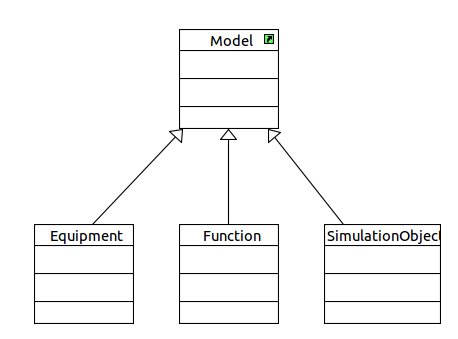Add a state machine to a component The easiest method to add a state machine to a component is create a State Machine diagram. So select our Automat component and do right clic. Choose add a new State machine diagram. In the scenario, our automat has 3 states:
- Init, this state is only on the simulation startup.
- Running, only the component is initilazed and simulation is running.
- Killed, only in the simulation shutdown (never used).
With the RobotML tool panel:
- Select the Initial state element and drag it on the diagram. Edit their properties and named it INIT.
- Select State element and drag it on the diagram. Edit their properties and named it RUNNING.
- Select the Final state element and drag it on the diagram. Edit their properties and named it KILLED.
- Select the Transition element and draw the transition between “INIT / RUNNING” and “RUNNING / KILLED” states.

Add transtion’s guard and effect Normally we have already added the usally function in the model. If it is not do, then
See also
Create our external librairy’s functions
In the State machine diagram created, select the transition between this INIT and RUNNING states. Edit the properties, and show the RobotML tab. Assign the InitGuard operation to the transition guard. this operation define our condition to autorized the running state activation.
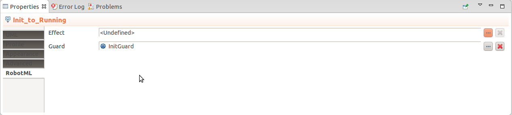Note
If you should to add an effect to a transition, then do the same action on the effect property.
Warning
RobotML not permit to a state machine to be inherited. The state machine must be clone in the child component. You can use the copy/paste function to do it.
Create the basics components¶
Show the RobotML perspective, and select the BasicModelObject node in the Model explorer. Do right clic and choose new child/Add new package.. Names the new package as basic components, and do right clic on it. Choose add new diagram/Add a component diagram, named it basicComponents_componentDiagram.
In the RobotML tool panel select the Component element, and drag it on the diagram. Named this component as Esm
Adding port To add a port to the component, select the Dataflow port element in the RobotML tool panel, and drag it on the component. The new added port is symbolized by a black arrow. Named this port as status_in and edit their property. In the property view, choose StatusList for the port type. By default the dataflow port direction is in. In the RobotML tab, we can change it. The available values are:
| In | Input port | |
| Out | Output port | |
| In / Out | Input and ouput port |

Adding property To add a property to the component, select the property element in RobotML tool panel, and drag it on the component. The new property is symbilzed by a rectangle. Named this property as esmDef, and edit their property. In the property view,choose esmDefinitions for the property type.
Inheritance Now we had a Esm component but in the real life, this component is considerate as an equipement. We had also define the Equipment component base, we don’t go to rewrite it! Then we go to use the inheritance method. We go to define Esm as child of the Equipment component base. So select the BasicModelObject node, and do right clic to chosse add new diagram/add a class diagram. Named the new diagram BasicModelObject_Classdiagram. In the Model explorer select the Equipment component base drag it on the diagram. Do the same action with the Esm component. In the RobotMl tool panel select the Generalization tool and link the Esm component to Equipment.
Now create all basics components referenced in the Annex, and assign the inheritance as the following class diagram.
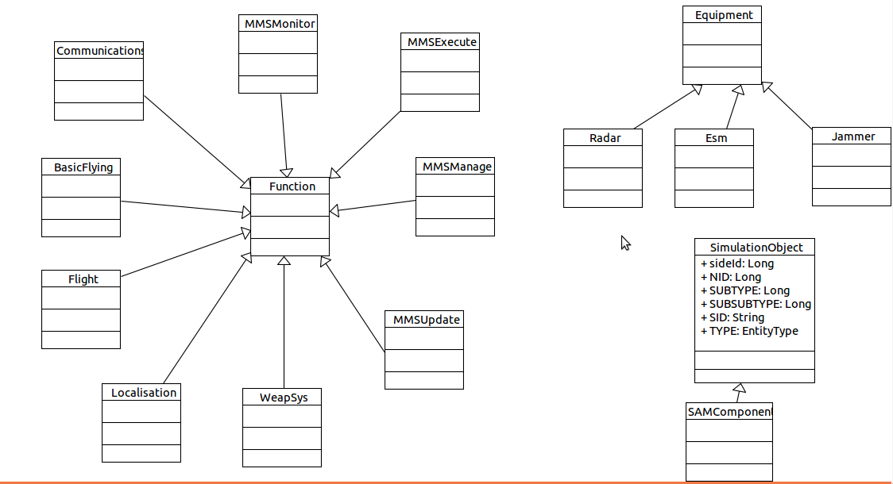Create the systems components¶
Now we go to define the systems components present in our scenario:
| MMS | Mission system management | |
| Protection | Protection system management | |
| Sensors | Sensors system management | |
| Navigation | Navigation system management |
So Create a new RobotMl model in the project view, and named it as SystemObjectModel, add a new SystemComponents package. Add a new Component diagram to the SystemComponents package, and create the fours system with the Component element of the RobotML tool panel.
Edit the properties’s component and assign ports, inherit and property as it defined in the Annex.
Create the robots components¶
In the scenario, we have two robots components entities:
| SASystem | Ground / Air robot | |
| Aircraft | Aircraft robot |
Create the new RobotObjectModel RobotML model, and add the RobotComponents package. Add a new Component diagram to the RobotMLComponents package, and create the fours system with the Component element of the RobotML tool panel.
Edit the properties’s component and assign ports, inherit and property as it defined in the Annex.
Create the scenary component¶
The scenary component is the root element of the simulation. It define the simulation’s envrionment, and contains the instances simulation.
Define the new ScenaryObjectModel RobotML model, and add the ScenaryComponents package. Create a Component diagram and create the Root component with the Component element of the RobotML tool panel.
Edit their properties and as assign ports, inherit and property as it define in the Annex.
Link the components¶
Now all our components are created, but they need to communicate to have some dynamic. So with the Link element of the RobotML tool panel, go the draw the component communications in the different model level.
Static validation model¶
When we finish the scenary modelling operation, we should to validate our model statically. The validation can to be run on all the model our just a sub tree section. To validate, select a node and do right clic. Choose Validation / Validate model or Validation / Validate subtree. When the validation been running, the error status is display on the Model explorer. Show the Error log view to known the model errors or warning.
Note
A model with not error and warning is strongest, and reduce the generation errors.
The deployment¶
The deployment is use to generate the sources code files to destination of a middleware or a simulator. For our scenary, our destination is the VLE simulator.
Create a new deployment¶
To create a new deployment, open the model level 4, and select the root level node. Do right clic, and select add new diagram / new deployment diagram.